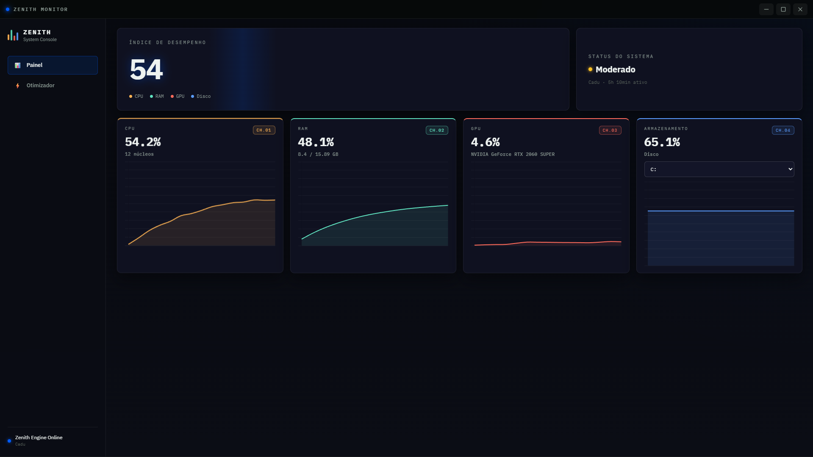

CPU · RAM · GPU · Disco — em tempo real.
Sem números falsos. Sem limpeza mágica.

Monitoramento
Cada métrica vem da mesma fonte que o Gerenciador de Tarefas usa — não de uma estimativa ou de um número inventado pra parecer alto.
% Processor Utility — a métrica que o Windows usa internamente, com fallback automático pra qualquer configuração de sistema.nvidia-smi em placas NVIDIA, com fallback pra systeminformation em outros modelos.Win32_LogicalDisk. Suporte a múltiplos discos com seleção na interface.Otimizador
Nada de mover arquivos de lugar e chamar de "limpeza". Cada operação chama a API certa do Windows.
ntdll.dll, psapi.dll e kernel32.dll: Working Set Evacuation, System File Cache flush, Standby List Purge e Modified Page List flush.%TEMP% — os que se acumulam com instaladores, atualizações e uso normal do Windows.ipconfig /flushdns pra limpar o cache de resolução de nomes — útil após trocar de rede ou configurar hosts locais.SCHEME_MIN) via powercfg, sem economia de energia.Por dentro
Problemas reais encontrados durante o desenvolvimento — e como foram resolvidos.
Get-Counter '\Processor Information(_Total)\% Processor Utility' — que funciona apenas em Windows com idioma inglês americano. Em PT-BR, o comando falha silenciosamente sem retornar erro. A correção foi migrar pra WMI (Win32_PerfFormattedData_Counters_ProcessorInformation), cujos nomes de classe e propriedade são sempre em inglês, independente do idioma do sistema operacional.idle/total ticks) pode mostrar valores até 40 pontos percentuais acima em CPUs com escalonamento de frequência agressivo. O Zenith tenta ler a métrica real e cai pro método clássico automaticamente se o provedor WMI não responder.nvidia-smi reporta atividade do driver como um todo (todas as engines: 3D, vídeo, compute, cópia). O Gerenciador de Tarefas mostra a engine 3D especificamente. Em workloads de vídeo ou compute, os dois podem divergir bastante. O Zenith usa nvidia-smi como fonte primária por ser mais direto e confiável.powershell.exe a cada segundo custaria 300-800ms de startup por chamada — tornando o loop de 1s impossível. A solução foi manter um único processo PowerShell em background, em loop infinito, enviando valores por stdout. O processo Node lê o último valor recebido a cada tick, sem nunca subir um novo processo.Stack
Instalação